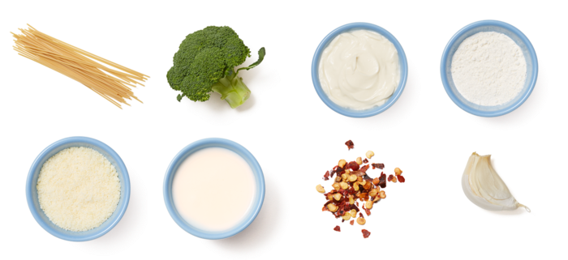

Bucatini Alfredo
with Broccoli
ITALIAN
COOK TIME: 25 minutes
YIELD: 4 servings
CALORIES: 850
This quick-cooking recipe captures all the deliciously creamy, rich flavor of the classic Italian-American sauce—with the welcome addition of quick-braised broccoli. A dusting of pecorino cheese completes each bowl with a touch of sharpness.

Ingredients
- ½ lb Bucatini Pasta
- 2 Tbsp Crème Fraîche
- ½ lb Broccoli
- 2 cloves Garlic
- ¼ cup Heavy Cream
- ¼ tsp Crushed Red Pepper Flakes
- 3 Tbsp All-Purpose Flour
- ¼ cup Grated Pecorino Cheese
- 2 Tbsp Verjus Blanc

Step 1: Prepare the Ingredients
Heat a large pot of salted water to boiling on high. Wash and dry the fresh produce. Cut off and discard the bottom 1/2 inch of the broccoli stem; cut the broccoli into small pieces, keeping the florets intact. Peel and finely chop the garlic.